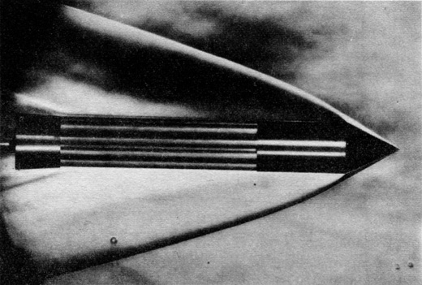
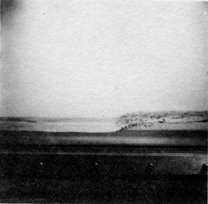
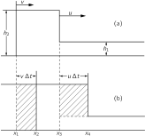
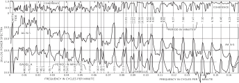
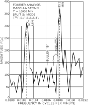
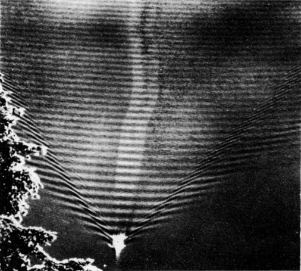
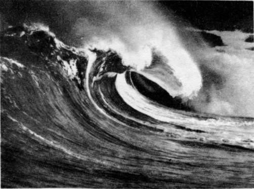

51. Waves
51–1 Bow waves#
Although we have finished our quantitative analyses of waves, this added chapter on the subject is intended to give some appreciation, qualitatively, for various phenomena that are associated with waves, which are too complicated to analyze in detail here. Since we have been dealing with waves for several chapters, more properly the subject might be called “some of the more complex phenomena associated with waves.”
The first topic to be discussed concerns the effects that are produced by a source of waves which is moving faster than the wave velocity, or the phase velocity. Let us first consider waves that have a definite velocity, like sound and light. If we have a source of sound which is moving faster than the speed of sound, then something like this happens: Suppose at a given moment a sound wave is generated from the source at point x_1 in Fig. 51–1; then, in the next moment, as the source moves to x_2, the wave from x_1 expands by a radius r_1 smaller than the distance that the source moves; and, of course, another wave starts from x_2. When the sound source has moved still farther, to x_3, and a wave is starting there, the wave from x_2 has now expanded to r_2, and the one from x_1 has expanded to r_3. Of course the thing is done continuously, not in steps, and therefore, we have a series of wave circles with a common tangent line which goes through the center of the source. We see that instead of a source generating spherical waves, as it would if it were standing still, it generates a wavefront which forms a cone in three dimensions, or a pair of lines in two dimensions. The angle of the cone is very easy to figure out. In a given amount of time the source moves a distance, say x_3 - x_1, proportional to v, the velocity of the source. In the meantime the wavefront has moved out a distance r_3, proportional to c_w, the speed of the wave. Therefore it is clear that the half-angle of opening has a sine equal to the ratio of the speed of the waves, divided by the speed of the source, and this sine has a solution only if c_w is less than v, or the speed of the object is faster than the speed of the wave:
Incidentally, although we implied that it is necessary to have a source of sound, it turns out, very interestingly, that once the object is moving faster than the speed of sound, it will make sound. That is, it is not necessary that it have a certain tone vibrational character. Any object moving through a medium faster than the speed at which the medium carries waves will generate waves on each side, automatically, just from the motion itself. This is simple in the case of sound, but it also occurs in the case of light. At first one might think nothing can move faster than the speed of light. However, light in glass has a phase velocity less than the speed of light in a vacuum, and it is possible to shoot a charged particle of very high energy through a block of glass such that the particle velocity is close to the speed of light in a vacuum, while the speed of light in the glass may be only \frac{2}{3} the speed of light in the vacuum. A particle moving faster than the speed of light in the medium will produce a conical wave of light with its apex at the source, like the wave wake from a boat (which is from the same effect, as a matter of fact). By measuring the cone angle, we can determine the speed of the particle. This is used technically to determine the speeds of particles as one of the methods of determining their energy in high-energy research. The direction of the light is all that needs to be measured.
This light is sometimes called Cherenkov radiation, because it was first observed by Cherenkov. How intense this light should be was analyzed theoretically by Frank and Tamm. The 1958 Nobel Prize for physics was awarded jointly to all three for this work.

The corresponding circumstances in the case of sound are illustrated in Fig. 51–2, which is a photograph of an object moving through a gas at a speed greater than the speed of sound. The changes in pressure produce a change in refractive index, and with a suitable optical system the edges of the waves can be made visible. We see that the object moving faster than the speed of sound does, indeed, produce a conical wave. But closer inspection reveals that the surface is actually curved. It is straight asymptotically, but it is curved near the apex, and we have now to discuss how that can be, which brings us to the second topic of this chapter.
51–2 Shock waves#
Wave speed often depends on the amplitude, and in the case of sound the speed depends upon the amplitude in the following way. An object moving through the air has to move the air out of the way, so the disturbance produced in this case is some kind of a pressure step, with the pressure higher behind the wavefront than in the undisturbed region not yet reached by the wave (running along at the normal speed, say). But the air that is left behind, after the wavefront passes, has been compressed adiabatically, and therefore the temperature is increased. Now the speed of sound increases with the temperature, so the speed in the region behind the jump is faster than in the air in front. That means that any other disturbance that is made behind this step, say by a continuous pushing of the body, or any other disturbance, will ride faster than the front, the speed increasing with higher pressure. Figure 51–3 illustrates the situation, with some little bumps of pressure added to the pressure contour to aid visualization. We see that the higher pressure regions at the rear overtake the front as time goes on, until ultimately the compressional wave develops a sharp front. If the strength is very high, “ultimately” means right away; if it is rather weak, it takes a long time; it may be, in fact, that the sound is spreading and dying out before it has time to do this.
The sounds we make in talking are extremely weak relative to the atmospheric pressure—only 1 part in a million or so. But for pressure changes of the order of 1 atmosphere, the wave velocity increases by about twenty percent, and the wavefront sharpens up at a correspondingly high rate. In nature nothing happens infinitely rapidly, presumably, and what we call a “sharp” front has, actually, a very slight thickness; it is not infinitely steep. The distances over which it is varying are of the order of one mean free path, in which the theory of the wave equation begins to fail because we did not consider the structure of the gas.
Now, referring again to Fig. 51–2, we see that the curvature can be understood if we appreciate that the pressures near the apex are higher than they are farther back, and so the angle \theta is greater. That is, the curve is the result of the fact that the speed depends upon the strength of the wave. Therefore the wave from an atomic bomb explosion travels much faster than the speed of sound for a while, until it gets so far out that it is weakened to such an extent from spreading that the pressure bump is small compared with atmospheric pressure. The speed of the bump then approaches the speed of sound in the gas into which it is going. (Incidentally, it always turns out that the speed of the shock is higher than the speed of sound in the gas ahead, but is lower than the speed of sound in the gas behind. That is, impulses from the back will arrive at the front, but the front rides into the medium in which it is going faster than the normal speed of signals. So one cannot tell, acoustically, that the shock is coming until it is too late. The light from the bomb arrives first, but one cannot tell that the shock is coming until it arrives, because there is no sound signal coming ahead of it.)

This is a very interesting phenomenon, this piling up of waves, and the main point on which it depends is that after a wave is present, the speed of the resulting wave should be higher. Another example of the same phenomenon is the following. Consider water flowing in a long channel with finite width and finite depth. If a piston, or a wall across the channel, is moved along the channel fast enough, water piles up, like snow before a snow plow. Now suppose the situation is as shown in Fig. 51–4, with a sudden step in water height somewhere in the channel. It can be demonstrated that long waves in a channel travel faster in deeper water than they do in shallow water. Therefore any new bumps or irregularities in energy supplied by the piston run off forward and pile up at the front. Again, ultimately what we have is just water with a sharp front, theoretically. However, as Fig. 51–4 shows, there are complications. Pictured is a wave coming up a channel; the piston is at the far right end of the channel. At first it might have appeared like a well-behaved wave, as one might expect, but farther along the channel, it has become sharper and sharper until the events pictured occurred. There is a terrible churning at the surface, as the pieces of water fall down, but it is essentially a very sharp rise with no disturbance of the water ahead.
Actually water is much more complicated than sound. However, just to illustrate a point, we will try to analyze the speed of such a so-called bore, in a channel. The point here is not that this is of any basic importance for our purposes—it is not a great generalization—it is only to illustrate that the laws of mechanics that we already know are capable of explaining the phenomenon.
Imagine, for a moment, that the water does look something like Fig. 51–5 (a), that water at the higher height h_2 is moving with a velocity v, and that the front is moving with velocity u into undisturbed water which is at height h_1. We would like to determine the speed at which the front moves. In a time \Delta t a vertical plane initially at x_1 moves a distance v\,\Delta t to x_2, while the front of the wave has moved u\,\Delta t.

Now we apply the equations of conservation of matter and momentum. First, the former: Per unit channel width, we see that the amount h_2v\,\Delta t of matter that has moved past x_1 (shown shaded) is compensated by the other shaded region, which amounts to (h_2 - h_1)u\,\Delta t. So, dividing by \Delta t, vh_2 = u(h_2 - h_1). That does not yet give us enough, because although we have h_2 and h_1, we do not know either u or v; we are trying to get both of them.
Now the next step is to use conservation of momentum. We have not discussed the problems of water pressure, or anything in hydrodynamics, but it is clear anyway that the pressure of water at a given depth is just enough to hold up the column of water above it. Therefore the pressure of water is equal to \rho, the density of water, times g, times the depth below the surface. Since the pressure increases linearly with depth, the average pressure over the plane at x_1, say, is \frac{1}{2}\rho gh_2, which is also the average force per unit width and per unit height pushing the plane toward x_2. So we multiply by another h_2 to get the total force which is acting on the water pushing from the left. On the other hand, there is pressure in the water on the right also, exerting an opposite force on the region in question, which is, by the same kind of analysis, \frac{1}{2}\rho gh_1^2. Now we must balance the forces against the rate of change of the momentum. Thus we have to figure out how much more momentum there is in situation (b) in Fig. 51–5 than there was in (a). We see that the additional mass that has acquired the speed v is just \rho h_2u\,\Delta t - \rho h_2v\,\Delta t (per unit width), and multiplying this by v gives the additional momentum to be equated to the impulse F\,\Delta t:
If we eliminate v from this equation by substituting vh_2 = u(h_2 - h_1), already found, and simplify, we get finally that u^2 = gh_2(h_1 + h_2)/2h_1.
If the height difference is very small, so that h_1 and h_2 are nearly equal, this says that the velocity {} = \sqrt{gh}. As we will see later, that is only true provided the wavelength of the wave is longer than the depth of the channel.
We could also do the analogous thing for sound waves—including the conservation of internal energy, not the conservation of entropy, because the shock is irreversible. In fact, if one checks the conservation of energy in the bore problem, one finds that energy is not conserved. If the height difference is small, it is almost perfectly conserved, but as soon as the height difference becomes very appreciable, there is a net loss of energy. This is manifested as the falling water and the churning shown in Fig. 51–4.
In shock waves there is a corresponding apparent loss of energy, from the point of view of adiabatic reactions. The energy in the sound wave, behind the shock, goes into heating of the gas after shock passes, corresponding to churning of the water in the bore. In working it out, three equations for the sound case turn out to be necessary for solution, and the temperature behind the shock is not the same as the temperature in front, as we have seen.
If we try to make a bore that is upside down ( h_2 < h_1), then we find that the energy loss per second is negative. Since energy is not available from anywhere, that bore cannot then maintain itself; it is unstable. If we were to start a wave of that sort, it would flatten out, because the speed dependence on height that resulted in sharpening in the case we discussed would now have the opposite effect.
51–3 Waves in solids#
The next kind of waves to be discussed are the more complicated waves in solids. We have already discussed sound waves in gas and in liquid, and there is a direct analog to a sound wave in a solid. If a sudden push is applied to a solid, it is compressed. It resists the compression, and a wave analogous to sound is started. However there is another kind of wave that is possible in a solid, and which is not possible in a fluid. If a solid is distorted by pushing it sideways (called shearing), then it tries to pull itself back. That is by definition what distinguishes a solid from a liquid: if we distort a liquid (internally), hold it a minute so that it calms down, and then let go, it will stay that way, but if we take a solid and push it, like shearing a piece of “Jello,” and let it go, it flies back and starts a shear wave, travelling in the same way the compressions travel. In all cases, the shear wave speed is less than the speed of longitudinal waves. The shear waves are somewhat more analogous, so far as their polarizations are concerned, to light waves. Sound has no polarization, it is just a pressure wave. Light has a characteristic orientation perpendicular to its direction of travel.
In a solid, the waves are of both kinds. First, there is a compression wave, analogous to sound, that runs at one speed. If the solid is not crystalline, then a shear wave polarized in any direction will propagate at a characteristic speed. (Of course all solids are crystalline, but if we use a block made up of microcrystals of all orientations, the crystal anisotropies average out.)
Another interesting question concerning sound waves is the following: What happens if the wavelength in a solid gets shorter, and shorter, and shorter? How short can it get? It is interesting that it cannot get any shorter than the space between the atoms, because if there is supposed to be a wave in which one point goes up and the next down, etc., the shortest possible wavelength is clearly the atom spacing. In terms of the modes of oscillation, we say that there are longitudinal modes, and transverse modes, long wave modes, short wave modes. As we consider wavelengths comparable to the spacing between the atoms, then the speeds are no longer constant; there is a dispersion effect where the velocity is not independent of the wave number. But, ultimately, the highest mode of transverse waves would be that in which every atom is doing the opposite of neighboring atoms.
Now from the point of view of atoms, the situation is like the two pendulums that we were talking about, for which there are two modes, one in which they both go together, and the other in which they go apart. It is possible to analyze the solid waves another way, in terms of a system of coupled harmonic oscillators, like an enormous number of pendulums, with the highest mode such that they oscillate oppositely, and lower modes with different relationships of the timing.
The shortest wavelengths are so short that they are not usually available technically. However they are of great interest because, in the theory of thermodynamics of a solid, the heat properties of a solid, for example specific heats, can be analyzed in terms of the properties of the short sound waves. Going to the extreme of sound waves of ever shorter wavelength, one necessarily comes to the individual motions of the atoms; the two things are the same ultimately.
A very interesting example of sound waves in a solid, both longitudinal and transverse, are the waves that are in the solid earth. Who makes the noises we do not know, but inside the earth, from time to time, there are earthquakes—some rock slides past some other rock. That is like a little noise. So waves like sound waves start out from such a source very much longer in wavelength than one usually considers in sound waves, but still they are sound waves, and they travel around in the earth. The earth is not homogeneous, however, and the properties, of pressure, density, compressibility, and so on, change with depth, and therefore the speed varies with depth. Then the waves do not travel in straight lines—there is a kind of index of refraction and they go in curves. The longitudinal waves and the transverse waves have different speeds, so there are different solutions for the different speeds. Therefore if we place a seismograph at some location and watch the way the thing jiggles after there has been an earthquake somewhere else, then we do not just get an irregular jiggling. We might get a jiggling, and a quieting down, and then another jiggling—what happens depends upon the location. If it were close enough, we would first receive longitudinal waves from the disturbance, and then, a few moments later, transverse waves, because they travel more slowly. By measuring the time difference between the two, we can tell how far away the earthquake is, if we know enough about the speeds and composition of the interior regions involved.
An example of the behavior pattern of waves in the earth is shown in Fig. 51–6. The two kinds of waves are represented by different symbols. If there were an earthquake at the place marked “source,” the transverse waves and longitudinal waves would arrive at different times at the station by the most direct routes, and there would also be reflections at discontinuities, resulting in other paths and times. It turns out that there is a core in the earth which does not carry transverse waves. If the station is opposite the source, transverse waves still arrive, but the timing is not right. What happens is that the transverse wave comes to the core, and whenever the transverse waves come to a surface which is oblique, between two materials, two new waves are generated, one transverse and one longitudinal. But inside the core of the earth, a transverse wave is not propagated (or at least, there is no evidence for it, only for a longitudinal wave); it comes out again in both forms and comes to the station.
It is from the behavior of these earthquake waves that it has been determined that transverse waves cannot be propagated within the inner circle. This means that the center of the earth is liquid in the sense that it cannot propagate transverse waves. The only way we know what is inside the earth is by studying earthquakes. So, by using a large number of observations of many earthquakes at different stations, the details have been worked out—the speed, the curves, etc. are all known. We know what the speeds of various kinds of waves are at every depth. Knowing that, therefore, it is possible to figure out what the normal modes of the earth are, because we know the speed of propagation of sound waves—in other words, the elastic properties of both kinds of waves at every depth. Suppose the earth were distorted into an ellipsoid and let go. It is just a matter of superposing waves travelling around in the ellipsoid to determine the period and shapes in a free mode. We have figured out that if there is a disturbance, there are a lot of modes, from the lowest, which is ellipsoidal, to higher modes with more structure.

The Chilean earthquake of May 1960 made a loud enough “noise” that the signals went around the earth many times, and new seismographs of great delicacy were made just in time to determine the frequencies of the fundamental modes of the earth and to compare them with the values that were calculated from the theory of sound with the known velocities, as measured from the independent earthquakes. The result of this experiment is illustrated in Fig. 51–7, which is a plot of the strength of the signal versus the frequency of its oscillation (a Fourier analysis). Note that at certain particular frequencies there is much more being received than at other frequencies; there are very definite maxima. These are the natural frequencies of the earth, because these are the main frequencies at which the earth can oscillate. In other words, if the entire motion of the earth is made up of many different modes, we would expect to obtain, for each station, irregular bumpings which indicate a superposition of many frequencies. If we analyze this in terms of frequencies, we should be able to find the characteristic frequencies of the earth. The vertical dark lines in the figure are the calculated frequencies, and we find a remarkable agreement, an agreement due to the fact that the theory of sound is right for the inside of the earth.

A very curious point is revealed in Fig. 51–8, which shows a very careful measurement, with better resolution of the lowest mode, the ellipsoidal mode of the earth. Note that it is not a single maximum, but a double one, 54.7 minutes and 53.1 minutes—slightly different. The reason for the two different frequencies was not known at the time that it was measured, although it may have been found in the meantime. There are at least two possible explanations: One would be that there may be asymmetry in the earth’s distribution, which would result in two similar modes. Another possibility, which is even more interesting, is this: Imagine the waves going around the earth in two directions from the source. The speeds will not be equal because of effects of the rotation of the earth in the equations of motion, which have not been taken into account in making the analysis. Motion in a rotating system is modified by Coriolis forces, and these may cause the observed splitting.
Regarding the method by which these quakes have been analyzed, what is obtained on the seismograph is not a curve of amplitude as a function of frequency, but displacement as a function of time, always a very irregular tracing. To find the amount of all the different sine waves for all different frequencies, we know that the trick is to multiply the data by a sine wave of a given frequency and integrate, i.e., average it, and in the average all other frequencies disappear. The figures were thus plots of the integrals found when the data were multiplied by sine waves of different cycles per minute, and integrated.
51–4 Surface waves#
Now, the next waves of interest, that are easily seen by everyone and which are usually used as an example of waves in elementary courses, are water waves. As we shall soon see, they are the worst possible example, because they are in no respects like sound and light; they have all the complications that waves can have. Let us start with long water waves in deep water. If the ocean is considered infinitely deep and a disturbance is made on the surface, waves are generated. All kinds of irregular motions occur, but the sinusoidal type motion, with a very small disturbance, might look like the common smooth ocean waves coming in toward the shore. Now with such a wave, the water, of course, on the average, is standing still, but the wave moves. What is the motion, is it transverse or longitudinal? It must be neither; it is not transverse, nor is it longitudinal. Although the water at a given place is alternately trough or hill, it cannot simply be moving up and down, by the conservation of water. That is, if it goes down, where is the water going to go? The water is essentially incompressible. The speed of compression of waves—that is, sound in the water—is much, much higher, and we are not considering that now. Since water is incompressible on this scale, as a hill comes down the water must move away from the region. What actually happens is that particles of water near the surface move approximately in circles. When smooth swells are coming, a person floating in a tire can look at a nearby object and see it going in a circle. So it is a mixture of longitudinal and transverse, to add to the confusion. At greater depths in the water the motions are smaller circles until, reasonably far down, there is nothing left of the motion (Fig. 51–9).
To find the velocity of such waves is an interesting problem: it must be some combination of the density of the water, the acceleration of gravity, which is the restoring force that makes the waves, and possibly of the wavelength and of the depth. If we take the case where the depth goes to infinity, it will no longer depend on the depth. Whatever formula we are going to get for the velocity of the phases of the waves must combine the various factors to make the proper dimensions, and if we try this in various ways, we find only one way to combine the density, g, and \lambda in order to make a velocity, namely, \sqrt{g\lambda}, which does not include the density at all. Actually, this formula for the phase velocity is not exactly right, but a complete analysis of the dynamics, which we will not go into, shows that the factors are as we have them, except for \sqrt{2\pi}:
It is interesting that the long waves go faster than the short waves. Thus if a boat makes waves far out, because there is some sports-car driver in a motorboat travelling by, then after a while the waves come to shore with slow sloshings at first and then more and more rapid sloshings, because the first waves that come are long. The waves get shorter and shorter as the time goes on, because the velocities go as the square root of the wavelength.
One may object, “That is not right, we must look at the group velocity in order to figure it out!” Of course that is true. The formula for the phase velocity does not tell us what is going to arrive first; what tells us is the group velocity. So we have to work out the group velocity, and it is left as a problem to show it to be one-half of the phase velocity, assuming that the velocity goes as the square root of the wavelength, which is all that is needed. The group velocity also goes as the square root of the wavelength. How can the group velocity go half as fast as the phase? If one looks at the bunch of waves that are made by a boat travelling along, following a particular crest, he finds that it moves forward in the group and gradually gets weaker and dies out in the front, and mystically and mysteriously a weak one in the back works its way forward and gets stronger. In short, the waves are moving through the group while the group is only moving at half the speed that the waves are moving.

Because the group velocities and phase velocities are not equal, then the waves that are produced by an object moving through are no longer simply a cone, but it is much more interesting. We can see that in Fig. 51–10, which shows the waves produced by an object moving through the water. Note that it is quite different than what we would have for sound, in which the velocity is independent of wavelength, where we would have wavefronts only along the cone, travelling outward. Instead of that, we have waves in the back with fronts moving parallel to the motion of the boat, and then we have little waves on the sides at other angles. This entire pattern of waves can, with ingenuity, be analyzed by knowing only this: that the phase velocity is proportional to the square root of the wavelength. The trick is that the pattern of waves is stationary relative to the (constant-velocity) boat; any other pattern would get lost from the boat.
The water waves that we have been considering so far were long waves in which the force of restoration is due to gravitation. But when waves get very short in the water, the main restoring force is capillary attraction, i.e., the energy of the surface, the surface tension. For surface tension waves, it turns out that the phase velocity is
where T is the surface tension and \rho the density. It is the exact opposite: the phase velocity is higher, the shorter the wavelength, when the wavelength gets very small. When we have both gravity and capillary action, as we always do, we get the combination of these two together:
where k = 2\pi/\lambda is the wave number. So the velocity of the waves of water is really quite complicated. The phase velocity as a function of the wavelength is shown in Fig. 51–11; for very short waves it is fast, for very long waves it is fast, and there is a minimum speed at which the waves can go. The group velocity can be calculated from the formula: it goes to \frac{3}{2} the phase velocity for ripples and \frac{1}{2} the phase velocity for gravity waves. To the left of the minimum the group velocity is higher than the phase velocity; to the right, the group velocity is less than the phase velocity. There are a number of interesting phenomena associated with these facts. In the first place, since the group velocity is increasing so rapidly as the wavelength goes down, if we make a disturbance there will be a slowest end of the disturbance going at the minimum speed with the corresponding wavelength, and then in front, going at higher speed, will be a short wave and a very long wave. It is very hard to see the long ones, but it is easy to see the short ones in a water tank.
So we see that the ripples often used to illustrate simple waves are quite interesting and complicated; they do not have a sharp wavefront at all, as is the case for simple waves like sound and light. The main wave has little ripples which run out ahead. A sharp disturbance in the water does not produce a sharp wave because of the dispersion. First come the very fine waves. Incidentally, if an object moves through the water at a certain speed, a rather complicated pattern results, because all the different waves are going at different speeds. One can demonstrate this with a tray of water and see that the fastest ones are the fine capillary waves. There are slowest waves, of a certain kind, which go behind. By inclining the bottom, one sees that where the depth is lower, the speed is lower. If a wave comes in at an angle to the line of maximum slope, it bends and tends to follow that line. In this way one can show various things, and we conclude that waves are more complicated in water than in air.
The speed of long waves in water with circulational motions is slower when the depth is less, faster in deep water. Thus as water comes toward a beach where the depth lessens, the waves go slower. But where the water is deeper, the waves are faster, so we get the effects of shock waves. This time, since the wave is not so simple, the shocks are much more contorted, and the wave over-curves itself, in the familiar way shown in Fig. 51–12. This is what happens when waves come into the shore, and the real complexities in nature are well revealed in such a circumstance. No one has yet been able to figure out what shape the wave should take as it breaks. It is easy enough when the waves are small, but when one gets large and breaks, then it is much more complicated.

An interesting feature about capillary waves can be seen in the disturbances made by an object moving through the water. From the point of view of the object itself, the water is flowing past, and the waves which ultimately sit around it are always the waves which have just the right speed to stay still with the object in the water. Similarly, around an object in a stream, with the stream flowing by, the pattern of waves is stationary, and at just the right wavelengths to go at the same speed as the water going by. But if the group velocity is less than the phase velocity, then the disturbances propagate out backwards in the stream, because the group velocity is not quite enough to keep up with the stream. If the group velocity is faster than the velocity of the phase, the pattern of waves will appear in front of the object. If one looks closely at objects in a stream, one can see that there are little ripples in front and long “slurps” in the back.
Another interesting feature of this sort can be observed in pouring liquids. If milk is poured fast enough out of a bottle, for instance, a large number of lines can be seen crossing both ways in the outgoing stream. They are waves starting from the disturbance at the edges and running out, much like the waves about an object in a stream. There are effects from both sides which produce the crossed pattern.
We have investigated some of the interesting properties of waves and the various complications of dependence of phase velocity on wavelength, the speed of the waves on depth, and so forth, that produce the really complex, and therefore interesting, phenomena of nature.